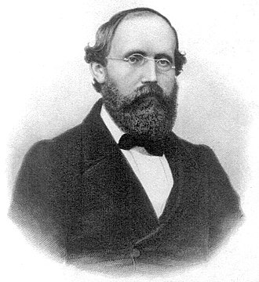

Calculus portal
Curves become motion.
d/dx x² = 2x
Click symbols on the notebook to switch branches of math.
Math elements everywhere
∫coastcoast (curiosity + friends) dx= mathtogether.ca
Explore tutoring, contest prep, livestreams, camps, charity contests, and peer support through a site that behaves like a math playground.
Join the community Watch lessons
Calculus portal
The idea
Founded by math enthusiasts, our community makes math fun and accessible. We bring together tutoring, contests, livestreams, camps, charity events, and peer support so students can build confidence while solving beautiful problems.
Program map
Free support for school math, foundations, and confidence.
Get helpWaterloo, AMC, AIME, CMO, strategy sessions, and problem sets.
TrainCommunity competitions that raise funds and make math social.
See storiesHands-on puzzles, team solving, and final challenge days.
ExploreGuest speakers, career paths, and student-led deep dives.
WatchTeach, organize, design, mentor, write, and lead.
JoinContest arena
Join interactive lessons and contest breakdowns where students compare methods, ask questions, and learn the reasoning behind hard problems.
Real-world math


Mathematical ancestors and modern sparks

Geometry as a proof language.

Symmetry and modern algebra.

Geometry, dynamics, and imagination.

Olympiad brilliance and analysis.

Math that guided spaceflight.

Geometry turned into gravity.

Measurement, courage, and discovery.

Prime mysteries and curved spaces.

Infinite series with impossible intuition.

Logic became programming language.
Unsolved and irresistible
Why do primes hide inside one of the most famous functions in math?
Pick a number, follow two tiny rules, and somehow nobody has proved the ending.
Every even number bigger than two seems to split into two primes.
Can every quickly checked solution also be quickly discovered?
Student leadership

MTC President

MTC Co-president

MTC Executive

MTC Executive

MTC Advisor

MTC Advisor
Add your equation
Volunteer, learn, teach, organize, or bring a friend. Math Together Canada is open to curious students who want math to feel collaborative.